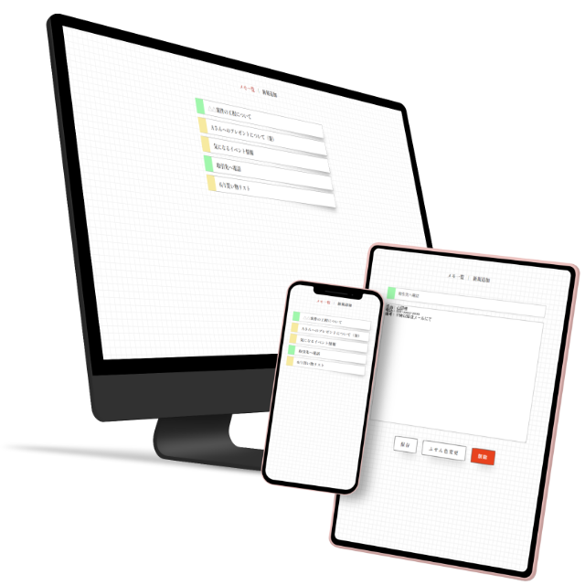

WORKS-10
10
メモアプリ
メモアプリ
Webアプリケーション
- 担当範囲
- デザイン、コーディング
- 使用言語・ソフト
- HTML(LS)、CSS3、Vue.js
- 対応機種
- パソコン、タブレット、スマートフォン
- 制作期間
- 10時間

メモの一覧画面は、方眼紙に付箋を次々に貼り付けていくようなデザインにしています。これは「やるべきことや覚えておくべきことを付箋に書いて貼っておき、用が済んだら剥がす」という現実でのアナログな動作をイメージしてのものです。
一度登録したメモの編集画面には削除ボタンが現れますが、誤操作を防ぐために警告色の赤色にしています。
- アプリ概要
- シンプルなメモアプリ
- クライアント・依頼内容（想定）
- 普段はアナログでメモを取るような人が、試しに使ってみたいと思えるようなメモ帳アプリを作ってほしいという依頼。
- ターゲット層
- 30代～50代の男女
- アプリデザインの方向性
- アプリを使ってメモを残すことに不慣れな人の入り口として、シンプルな操作性で最低限の機能のみ備えたものとする。
- 制作意図・工夫した点
- Vue.js(Vue3)を用いて作成した最初のアプリケーションです。
VueCLIでプロジェクトを作成し、プラグインのVueRouter（シングルページアプリケーションのルーティング制御）とVuex（メモに保存するデータの一元管理）を使用しています。
デザインのテーマを「文房具風」と設定し、メモのタイトル部を付箋に見立ててそれを一覧画面に貼り付けていくような表現にしました。
付箋の色はボタン操作で黄色と緑色の2色を切り替えられるようになっており、ユーザーがメモの内容や用途によって使い分けできるようにしています。
メモ登録フォームやボタンはコンポーネント化して複数箇所で活用しています。